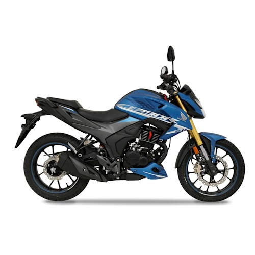
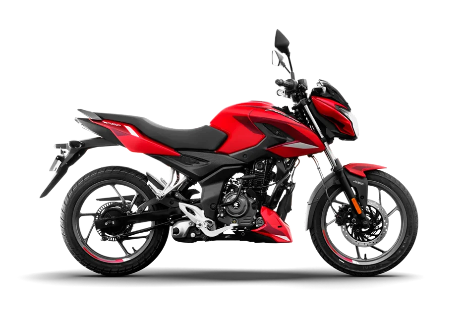
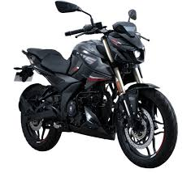

Motos de todos los estilos
Aquí encontramos todos los estilos de motos, desde modelos deportivos diseñados para la velocidad y el alto rendimiento, hasta motos urbanas ideales para la movilidad diaria en la ciudad. También contamos con motos tipo touring para viajes largos, motos todoterreno perfectas para aventuras fuera de la carretera y modelos clásicos que destacan por su diseño y comodidad. Nuestro catálogo reúne diferentes marcas, cilindradas y estilos para que cada persona pueda encontrar la moto que mejor se adapte a sus necesidades, gustos y forma de conducir




La historia de la motocicleta se remonta al siglo XIX cuando el estadunidense Sylvester Howard Roper (1823-1896) inventó un motor de cilindros a vapor (accionado por carbón) en 1867. Esta puede ser considerada la primera motocicleta, si se permite que la descripción de una motocicleta incluya un motor a vapor.
Los alemanes Wilhelm Maybach y Gottlieb Daimler construyeron una moto con cuadro y cuatro ruedas de madera y motor de combustión interna en 1885. Su velocidad era de 18 km/h y el motor desarrollaba 0,5 caballos.

Gottlieb Daimler usó un nuevo motor ideado por el ingeniero Nikolaus August Otto , quien inventó el primer motor de combustión interna de cuatro tiempos en 1876. Lo llamó Motor de ciclo Otto y, tan pronto como lo completó, Daimler (antiguo empleado de Otto) lo convirtió en una motocicleta que algunos historiadores consideran la primera de la historia
En 1894 Hildebrand y Wolfmüller presentan en Múnich la primera motocicleta que fue fabricada en serie y con claros fines comerciales. La Hildebrand y Wolfmüller se mantuvo en producción hasta 1897.
Los hermanos rusos Eugéne y Michel Werner afincados en París montaron un motor en una bicicleta. El modelo inicial con el motor sobre la rueda delantera se comenzó a fabricar en 1894.
Ver mas| # | Nombre | Cilindraje | Estilo |
|---|---|---|---|
| 1 | Pulsar Ns 400z | 400 CC | Naked Sport |
| 2 | Pulsar NS 125 | 125 CC | Naked Sport |
| 3 | Pulsar N250 FI ABS | 250 CC | Naked "New Gen" |
| 4 | Pulsar RS 200 FI ABS | 200 CC | Racing / Carenada" |
Más que un medio de transporte, conducir una moto representa libertad, aventura y un estilo de vida que mueve el alma de sus seguidores. Muchos motociclistas describen la sensación como una extensión de su propio cuerpo, convirtiendo cada trayecto en una experiencia inmersiva donde el conductor es protagonista en lugar de un simple espectador
- Manejo deportivo
- Manejo urbano
- Manejo touring
- Manejo todoterreno